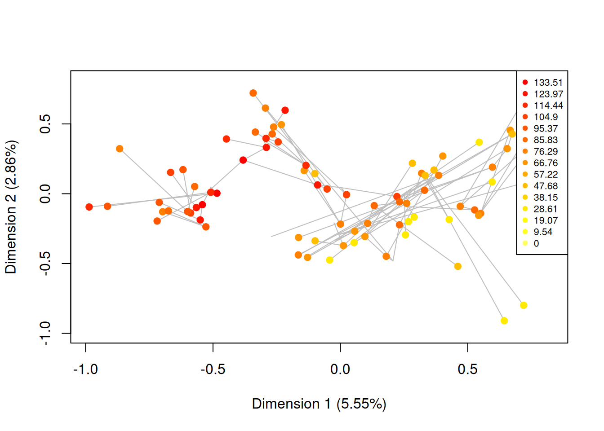

8 Ecology demo
This is an example of typical disparity analysis that can be performed in ecology.
8.1 Data
For this example, we will use the famous iris inbuilt data set
data(iris)This data contains petal and sepal length for 150 individual plants sorted into three species.
## Separating the species
species <- iris[,5]
## Which species?
unique(species)## [1] setosa versicolor virginica
## Levels: setosa versicolor virginica## Separating the petal/sepal length
measurements <- iris[,1:4]
head(measurements)## Sepal.Length Sepal.Width Petal.Length Petal.Width
## 1 5.1 3.5 1.4 0.2
## 2 4.9 3.0 1.4 0.2
## 3 4.7 3.2 1.3 0.2
## 4 4.6 3.1 1.5 0.2
## 5 5.0 3.6 1.4 0.2
## 6 5.4 3.9 1.7 0.4We can then ordinate the data using a PCA (prcomp function) thus defining our four dimensional space as the poetically named petal-space.
## Ordinating the data
ordination <- prcomp(measurements)
## The petal-space
petal_space <- ordination$x
## Adding the elements names to the petal-space (the individuals IDs)
rownames(petal_space) <- 1:nrow(petal_space)8.2 Classic analysis
A classical way to represent this ordinated data would be to use two dimensional plots to look at how the different species are distributed in the petal-space.
## Measuring the variance on each axis
variances <- apply(petal_space, 2, var)
variances <- variances/sum(variances)
## Graphical option
par(bty = "n")
## A classic 2D ordination plot
plot(petal_space[, 1], petal_space[, 2], col = species,
xlab = paste0("PC 1 (", round(variances[1], 2), ")"),
ylab = paste0("PC 2 (", round(variances[2], 2), ")"))
This shows the distribution of the different species in the petal-space along the two first axis of variation. This is a pretty standard way to visualise the multidimensional space and further analysis might be necessary to test wether the groups are different such as a linear discriminant analysis (LDA). However, in this case we are ignoring the two other dimensions of the ordination! If we look at the two other axis we see a totally different result:
## Plotting the two second axis of the petal-space
plot(petal_space[, 3], petal_space[, 4], col = species,
xlab = paste0("PC 3 (", round(variances[3], 2), ")"),
ylab = paste0("PC 4 (", round(variances[4], 2), ")"))
Additionally, these two represented dimensions do not represent a biological reality per se; i.e. the values on the first dimension do not represent a continuous trait (e.g. petal length), instead they just represent the ordinations of correlations between the data and some factors.
Therefore, we might want to approach this problem without getting stuck in only two dimensions and consider the whole dataset as a n-dimensional object.
8.3 A multidimensional approach with dispRity
The first step is to create different subsets that represent subsets of the ordinated space (i.e. sub-regions within the n-dimensional object). Each of these subsets will contain only the individuals of a specific species.
## Creating the table that contain the elements and their attributes
petal_subsets <- custom.subsets(petal_space, group = list(
"setosa" = which(species == "setosa"),
"versicolor" = which(species == "versicolor"),
"virginica" = which(species == "virginica")))
## Visualising the dispRity object content
petal_subsets## ---- dispRity object ----
## 3 customised subsets for 150 elements:
## setosa, versicolor, virginica.This created a dispRity object (more about that here) with three subsets corresponding to each subspecies.
8.3.1 Bootstrapping the data
We can the bootstrap the subsets to be able test the robustness of the measured disparity to outliers. We can do that using the default options of boot.matrix (more about that here):
## Bootstrapping the data
(petal_bootstrapped <- boot.matrix(petal_subsets))## ---- dispRity object ----
## 3 customised subsets for 150 elements with 4 dimensions:
## setosa, versicolor, virginica.
## Data was bootstrapped 100 times (method:"full").8.3.2 Calculating disparity
Disparity can be calculated in many ways, therefore the dispRity function allows users to define their own measure of disparity. For more details on measuring disparity, see the dispRity metrics section.
In this example, we are going to define disparity as the median distance between the different individuals and the centroid of the ordinated space. High values of disparity will indicate a generally high spread of points from this centroid (i.e. on average, the individuals are far apart in the ordinated space). We can define the metrics easily in the dispRity function by feeding them to the metric argument. Here we are going to feed the functions stats::median and dispRity::centroids which calculates distances between elements and their centroid.
## Calculating disparity as the median distance between each elements and
## the centroid of the petal-space
(petal_disparity <- dispRity(petal_bootstrapped, metric = c(median, centroids)))## ---- dispRity object ----
## 3 customised subsets for 150 elements with 4 dimensions:
## setosa, versicolor, virginica.
## Data was bootstrapped 100 times (method:"full").
## Disparity was calculated as: c(median, centroids).8.3.3 Summarising the results (plot)
Similarly to the custom.subsets and boot.matrix function, dispRity displays a dispRity object. But we are definitely more interested in actually look at the calculated values.
First we can summarise the data in a table by simply using summary:
## Displaying the summary of the calculated disparity
summary(petal_disparity)## subsets n obs bs.median 2.5% 25% 75% 97.5%
## 1 setosa 50 0.421 0.419 0.342 0.401 0.445 0.503
## 2 versicolor 50 0.693 0.657 0.530 0.622 0.692 0.733
## 3 virginica 50 0.785 0.745 0.577 0.690 0.797 0.880We can also plot the results in a similar way:
## Graphical options
par(bty = "n")
## Plotting the disparity in the petal_space
plot(petal_disparity)
Now contrary to simply plotting the two first axis of the PCA where we saw that the species have a different position in the two first petal-space, we can now also see that they occupy this space clearly differently!
8.3.4 Testing hypothesis
Finally we can test our hypothesis that we guessed from the disparity plot (that some groups occupy different volume of the petal-space) by using the test.dispRity option.
## Running a PERMANOVA
test.dispRity(petal_disparity, test = adonis.dispRity)## Warning in test.dispRity(petal_disparity, test = adonis.dispRity): adonis.dispRity test will be applied to the data matrix, not to the calculated disparity.
## See ?adonis.dispRity for more details.## Warning in adonis.dispRity(data, ...): The input data for adonis.dispRity was not a distance matrix.
## The results are thus based on the distance matrix for the input data (i.e. dist(data$matrix)).
## Make sure that this is the desired methodological approach!##
## Call:
## vegan::adonis(formula = dist(matrix) ~ group, data = data, method = "euclidean")
##
## Permutation: free
## Number of permutations: 999
##
## Terms added sequentially (first to last)
##
## Df SumsOfSqs MeanSqs F.Model R2 Pr(>F)
## group 2 592.07 296.037 487.33 0.86894 0.001 ***
## Residuals 147 89.30 0.607 0.13106
## Total 149 681.37 1.00000
## ---
## Signif. codes: 0 '***' 0.001 '**' 0.01 '*' 0.05 '.' 0.1 ' ' 1## Post-hoc testing of the differences between species (corrected for multiple tests)
test.dispRity(petal_disparity, test = t.test, correction = "bonferroni")## [[1]]
## statistic: t
## setosa : versicolor -33.714480
## setosa : virginica -34.257797
## versicolor : virginica -8.595829
##
## [[2]]
## parameter: df
## setosa : versicolor 189.0217
## setosa : virginica 150.1371
## versicolor : virginica 171.2387
##
## [[3]]
## p.value
## setosa : versicolor 2.107278e-81
## setosa : virginica 2.252270e-72
## versicolor : virginica 1.506037e-14We can now see that there is a significant difference in petal-space occupancy between all species of iris.
8.3.4.1 Setting up a multidimensional null-hypothesis
One other series of test can be done on the shape of the petal-space. Using a MCMC permutation test we can simulate a petal-space with specific properties and see if our observed petal-space matches these properties (similarly to Díaz et al. (2016)):
## Testing against a uniform distribution
disparity_uniform <- null.test(petal_disparity, replicates = 200,
null.distrib = runif, scale = FALSE)
plot(disparity_uniform)
## Testing against a normal distribution
disparity_normal <- null.test(petal_disparity, replicates = 200,
null.distrib = rnorm, scale = TRUE)
plot(disparity_normal)
In both cases we can see that our petal-space is not entirely normal or uniform. This is expected because of the simplicity of these parameters.
References
Díaz, Sandra, Jens Kattge, Johannes HC Cornelissen, Ian J Wright, Sandra Lavorel, Stéphane Dray, Björn Reu, et al. 2016. “The Global Spectrum of Plant Form and Function.” Nature 529 (7585). Nature Publishing Group: 167. http://dx.doi.org/10.1038/nature16489.